Prometheus¶
我们知道监控是保证系统运行必不可少的功能，特别是对于 Kubernetes 这种比较庞大的系统来说，监控报警更是不可或缺，我们需要时刻了解系统的各种运行指标，也需要时刻了解我们的 Pod 的各种指标，更需要在出现问题的时候有报警信息通知到我们。
在早期的版本中 Kubernetes 提供了 heapster、influxDB、grafana 的组合来监控系统，在现在的版本中已经移除掉了 heapster，现在更加流行的监控工具是 Prometheus，Prometheus 是 Google 内部监控报警系统的开源版本，是 Google SRE 思想在其内部不断完善的产物，它的存在是为了更快和高效的发现问题，快速的接入速度，简单灵活的配置都很好的解决了这一切，而且是已经毕业的 CNCF 项目。
简介¶
Prometheus 最初是 SoundCloud 构建的开源系统监控和报警工具，是一个独立的开源项目，于2016年加入了 CNCF 基金会，作为继 Kubernetes 之后的第二个托管项目。Prometheus 相比于其他传统监控工具主要有以下几个特点：
- 具有由 metric 名称和键/值对标识的时间序列数据的多维数据模型
- 有一个灵活的查询语言
- 不依赖分布式存储，只和本地磁盘有关
- 通过 HTTP 的服务拉取时间序列数据
- 也支持推送的方式来添加时间序列数据
- 还支持通过服务发现或静态配置发现目标
- 多种图形和仪表板支持
Prometheus 由多个组件组成，但是其中有些组件是可选的：
Prometheus Server：用于抓取指标、存储时间序列数据exporter：暴露指标让任务来抓pushgateway：push 的方式将指标数据推送到该网关alertmanager：处理报警的报警组件adhoc：用于数据查询
大多数 Prometheus 组件都是用 Go 编写的，因此很容易构建和部署为静态的二进制文件。下图是 Prometheus 官方提供的架构及其一些相关的生态系统组件：
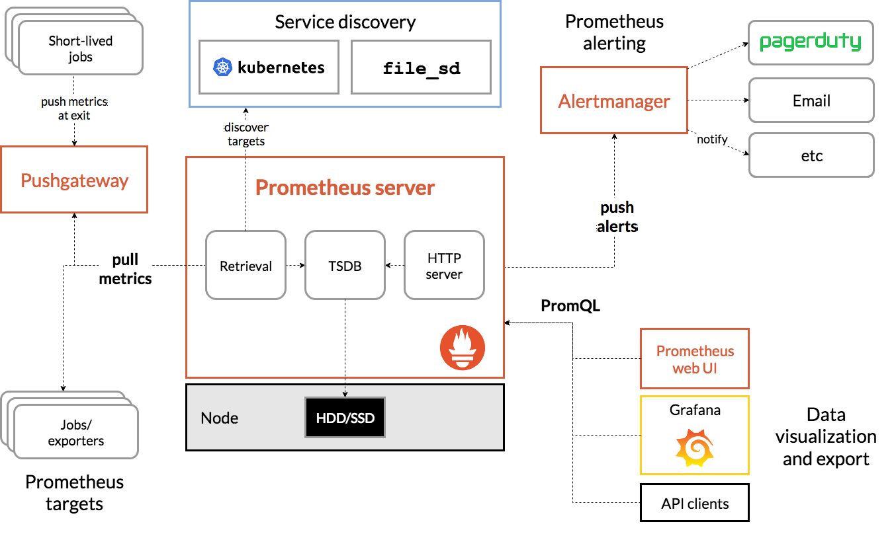
整体流程比较简单，Prometheus 直接接收或者通过中间的 Pushgateway 网关被动获取指标数据，在本地存储所有的获取的指标数据，并对这些数据进行一些规则整理，用来生成一些聚合数据或者报警信息，Grafana 或者其他工具用来可视化这些数据。
安装¶
由于 Prometheus 是 Golang 编写的程序，所以要安装的话也非常简单，只需要将二进制文件下载下来直接执行即可，前往地址：https://prometheus.io/download 下载最新版本即可。
Prometheus 是通过一个 YAML 配置文件来进行启动的，如果我们使用二进制的方式来启动的话，可以使用下面的命令：
$ ./prometheus --config.file=prometheus.yml其中 prometheus.yml 文件的基本配置如下：
global:
scrape_interval: 15s
evaluation_interval: 15s
rule_files:
# - "first.rules"
# - "second.rules"
scrape_configs:
- job_name: prometheus
static_configs:
- targets: ['localhost:9090']上面这个配置文件中包含了3个模块：global、rule_files 和 scrape_configs。
-
global模块控制Prometheus Server的全局配置：scrape_interval：表示 prometheus 抓取指标数据的频率，默认是15s，我们可以覆盖这个值evaluation_interval：用来控制评估规则的频率，prometheus 使用规则产生新的时间序列数据或者产生警报
-
rule_files：指定了报警规则所在的位置，prometheus 可以根据这个配置加载规则，用于生成新的时间序列数据或者报警信息，当前我们没有配置任何报警规则。 -
scrape_configs用于控制 prometheus 监控哪些资源。
由于 prometheus 通过 HTTP 的方式来暴露的它本身的监控数据，prometheus 也能够监控本身的健康情况。在默认的配置里有一个单独的 job，叫做 prometheus，它采集 prometheus 服务本身的时间序列数据。这个 job 包含了一个单独的、静态配置的目标：监听 localhost 上的 9090 端口。prometheus 默认会通过目标的 /metrics 路径采集 metrics。所以，默认的 job 通过 URL：http://localhost:9090/metrics 采集 metrics。收集到的时间序列包含 prometheus 服务本身的状态和性能。如果我们还有其他的资源需要监控的话，直接配置在 scrape_configs 模块下面就可以了。
示例应用¶
比如我们在本地启动一些样例来让 Prometheus 采集。Go 客户端库包含一个示例，该示例为具有不同延迟分布的三个服务暴露 RPC 延迟。
首先确保已经安装了 Go 环境并启用 go modules，下载 Prometheus 的 Go 客户端库并运行这三个示例：
$ git clone https://github.com/prometheus/client_golang.git
$ cd client_golang/examples/random
$ export GO111MODULE=on
$ export GOPROXY=https://goproxy.cn
$ go build然后在3个独立的终端里面运行3个服务：
$ ./random -listen-address=:8080
$ ./random -listen-address=:8081
$ ./random -listen-address=:8082这个时候我们可以得到3个不同的监控接口：http://localhost:8080/metrics、http://localhost:8081/metrics 和 http://localhost:8082/metrics。
现在我们配置 Prometheus 来采集这些新的目标，让我们将这三个目标分组到一个名为 example-random 的任务。假设前两个端点（即：http://localhost:8080/metrics、http://localhost:8081/metrics ）都是生产级目标应用，第三个端点（即：http://localhost:8082/metrics ）为金丝雀实例。要在 Prometheus 中对此进行建模，我们可以将多组端点添加到单个任务中，为每组目标添加额外的标签。 在此示例中，我们将 group =“production” 标签添加到第一组目标，同时将 group=“canary”添加到第二组。将以下配置添加到 prometheus.yml 中的 scrape_configs 部分，然后重新启动 Prometheus 实例：
scrape_configs:
- job_name: 'example-random'
# Override the global default and scrape targets from this job every 5 seconds.
scrape_interval: 5s
static_configs:
- targets: ['localhost:8080', 'localhost:8081']
labels:
group: 'production'
- targets: ['localhost:8082']
labels:
group: 'canary'然后我们可以到浏览器中查看 Prometheus 的配置是否有新增的任务，这就是 Prometheus 添加监控配置最基本的配置方式了，非常简单，只需要提供一个符合 metrics 格式的可访问的接口配置给 Prometheus 就可以了。
但是由于我们这里是要运行在 Kubernetes 系统中，所以我们直接用 Docker 镜像的方式运行。
命名空间
为了方便管理，我们将监控相关的所有资源对象都安装在 kube-mon 这个 namespace 下面，没有的话可以提前创建。
为了能够方便的管理配置文件，我们这里将 prometheus.yml 文件用 ConfigMap 的形式进行管理：（prometheus-cm.yaml）
apiVersion: v1
kind: ConfigMap
metadata:
name: prometheus-config
namespace: kube-mon
data:
prometheus.yml: |
global:
scrape_interval: 15s
scrape_timeout: 15s
scrape_configs:
- job_name: 'prometheus'
static_configs:
- targets: ['localhost:9090']我们这里暂时只配置了对 prometheus 本身的监控，直接创建该资源对象：
$ kubectl apply -f prometheus-cm.yaml
configmap "prometheus-config" created配置文件创建完成了，以后如果我们有新的资源需要被监控，我们只需要将上面的 ConfigMap 对象更新即可。现在我们来创建 prometheus 的 Pod 资源：(prometheus-deploy.yaml)
apiVersion: apps/v1
kind: Deployment
metadata:
name: prometheus
namespace: kube-mon
labels:
app: prometheus
spec:
selector:
matchLabels:
app: prometheus
template:
metadata:
labels:
app: prometheus
spec:
serviceAccountName: prometheus
nodeSelector:
monitor: prometheus
containers:
- image: prom/prometheus:v2.14.0
name: prometheus
args:
- "--config.file=/etc/prometheus/prometheus.yml"
- "--storage.tsdb.path=/prometheus" # 指定tsdb数据路径
- "--storage.tsdb.retention.time=24h"
- "--web.enable-admin-api" # 控制对admin HTTP API的访问，其中包括删除时间序列等功能
- "--web.enable-lifecycle" # 支持热更新，直接执行localhost:9090/-/reload立即生效
- "--web.console.libraries=/usr/share/prometheus/console_libraries"
- "--web.console.templates=/usr/share/prometheus/consoles"
ports:
- containerPort: 9090
name: http
volumeMounts:
- mountPath: "/etc/prometheus"
name: config-volume
- mountPath: "/prometheus"
name: data
resources:
requests:
cpu: 100m
memory: 512Mi
limits:
cpu: 100m
memory: 512Mi
volumes:
- name: data
hostPath:
path: /data/prometheus/
- configMap:
name: prometheus-config
name: config-volume另外为了 prometheus 的性能和数据持久化我们这里是直接将通过 hostPath 的方式来进行数据持久化的，通过 --storage.tsdb.path=/prometheus 指定数据目录，然后将该目录声明挂载到 /data/prometheus 这个主机目录下面，为了防止 Pod 漂移，所以我们使用 nodeSelector 将 Pod 固定到了一个具有 monitor=prometheus 标签的节点上，如果没有这个标签则需要为你的目标节点打上这个标签：
$ kubectl label node ydzs-node3 monitor=prometheus
node/ydzs-node3 labeled由于 prometheus 可以访问 Kubernetes 的一些资源对象，所以需要配置 rbac 相关认证，这里我们使用了一个名为 prometheus 的 serviceAccount 对象：(prometheus-rbac.yaml)
apiVersion: v1
kind: ServiceAccount
metadata:
name: prometheus
namespace: kube-mon
---
apiVersion: rbac.authorization.k8s.io/v1
kind: ClusterRole
metadata:
name: prometheus
rules:
- apiGroups:
- ""
resources:
- nodes
- services
- endpoints
- pods
- nodes/proxy
verbs:
- get
- list
- watch
- apiGroups:
- "extensions"
resources:
- ingresses
verbs:
- get
- list
- watch
- apiGroups:
- ""
resources:
- configmaps
- nodes/metrics
verbs:
- get
- nonResourceURLs:
- /metrics
verbs:
- get
---
apiVersion: rbac.authorization.k8s.io/v1beta1
kind: ClusterRoleBinding
metadata:
name: prometheus
roleRef:
apiGroup: rbac.authorization.k8s.io
kind: ClusterRole
name: prometheus
subjects:
- kind: ServiceAccount
name: prometheus
namespace: kube-mon由于我们要获取的资源信息，在每一个 namespace 下面都有可能存在，所以我们这里使用的是 ClusterRole 的资源对象，值得一提的是我们这里的权限规则声明中有一个 nonResourceURLs 的属性，是用来对非资源型 metrics 进行操作的权限声明，这个在以前我们很少遇到过，然后直接创建上面的资源对象即可：
$ kubectl apply -f prometheus-rbac.yaml
serviceaccount "prometheus" created
clusterrole.rbac.authorization.k8s.io "prometheus" created
clusterrolebinding.rbac.authorization.k8s.io "prometheus" created现在我们就可以添加 promethues 的资源对象了：
$ kubectl apply -f prometheus-deploy.yaml
deployment.apps/prometheus created
$ kubectl get pods -n kube-mon
NAME READY STATUS RESTARTS AGE
prometheus-df4f47d95-vksmc 0/1 CrashLoopBackOff 3 98s
$ kubectl logs -f prometheus-df4f47d95-vksmc -n kube-mon
level=info ts=2019-12-12T03:08:49.424Z caller=main.go:332 msg="Starting Prometheus" version="(version=2.14.0, branch=HEAD, revision=edeb7a44cbf745f1d8be4ea6f215e79e651bfe19)"
level=info ts=2019-12-12T03:08:49.424Z caller=main.go:333 build_context="(go=go1.13.4, user=root@df2327081015, date=20191111-14:27:12)"
level=info ts=2019-12-12T03:08:49.425Z caller=main.go:334 host_details="(Linux 3.10.0-1062.4.1.el7.x86_64 #1 SMP Fri Oct 18 17:15:30 UTC 2019 x86_64 prometheus-df4f47d95-vksmc (none))"
level=info ts=2019-12-12T03:08:49.425Z caller=main.go:335 fd_limits="(soft=1048576, hard=1048576)"
level=info ts=2019-12-12T03:08:49.425Z caller=main.go:336 vm_limits="(soft=unlimited, hard=unlimited)"
level=error ts=2019-12-12T03:08:49.425Z caller=query_logger.go:85 component=activeQueryTracker msg="Error opening query log file" file=/prometheus/queries.active err="open /prometheus/queries.active: permission denied"
panic: Unable to create mmap-ed active query log
goroutine 1 [running]:
github.com/prometheus/prometheus/promql.NewActiveQueryTracker(0x7ffd8cf6ec5d, 0xb, 0x14, 0x2b4f400, 0xc0006f33b0, 0x2b4f400)
/app/promql/query_logger.go:115 +0x48c
main.main()
/app/cmd/prometheus/main.go:364 +0x5229创建 Pod 后，我们可以看到并没有成功运行，出现了 open /prometheus/queries.active: permission denied 这样的错误信息，这是因为我们的 prometheus 的镜像中是使用的 nobody 这个用户，然后现在我们通过 hostPath 挂载到宿主机上面的目录的 ownership 却是 root：
$ ls -la /data/
total 36
drwxr-xr-x 6 root root 4096 Dec 12 11:07 .
dr-xr-xr-x. 19 root root 4096 Nov 9 23:19 ..
drwxr-xr-x 2 root root 4096 Dec 12 11:07 prometheus所以当然会出现操作权限问题了，这个时候我们就可以通过 securityContext 来为 Pod 设置下 volumes 的权限，通过设置 runAsUser=0 指定运行的用户为 root：
......
securityContext:
runAsUser: 0
volumes:
- name: data
hostPath:
path: /data/prometheus/
- configMap:
name: prometheus-config
name: config-volume这个时候我们重新更新下 prometheus：
$ kubectl apply -f prometheus-deploy.yaml
deployment.apps/prometheus configured
$ kubectl get pods -n kube-mon
NAME READY STATUS RESTARTS AGE
prometheus-79b8774f68-7m8zr 1/1 Running 0 56s
$ kubectl logs -f prometheus-79b8774f68-7m8zr -n kube-mon
level=info ts=2019-12-12T03:17:44.228Z caller=main.go:332 msg="Starting Prometheus" version="(version=2.14.0, branch=HEAD, revision=edeb7a44cbf745f1d8be4ea6f215e79e651bfe19)"
......
level=info ts=2019-12-12T03:17:44.822Z caller=main.go:673 msg="TSDB started"
level=info ts=2019-12-12T03:17:44.822Z caller=main.go:743 msg="Loading configuration file" filename=/etc/prometheus/prometheus.yml
level=info ts=2019-12-12T03:17:44.827Z caller=main.go:771 msg="Completed loading of configuration file" filename=/etc/prometheus/prometheus.yml
level=info ts=2019-12-12T03:17:44.827Z caller=main.go:626 msg="Server is ready to receive web requests."Pod 创建成功后，为了能够在外部访问到 prometheus 的 webui 服务，我们还需要创建一个 Service 对象：(prometheus-svc.yaml)
apiVersion: v1
kind: Service
metadata:
name: prometheus
namespace: kube-mon
labels:
app: prometheus
spec:
selector:
app: prometheus
type: NodePort
ports:
- name: web
port: 9090
targetPort: http为了方便测试，我们这里创建一个 NodePort 类型的服务，当然我们可以创建一个 Ingress对象，通过域名来进行访问：
$ $ kubectl apply -f prometheus-svc.yaml
service "prometheus" created
$ kubectl get svc -n kube-mon
NAME TYPE CLUSTER-IP EXTERNAL-IP PORT(S) AGE
prometheus NodePort 10.96.194.29 <none> 9090:30980/TCP 13h现在我们就可以通过 http://任意节点IP:30980 访问 prometheus 的 webui 服务了：
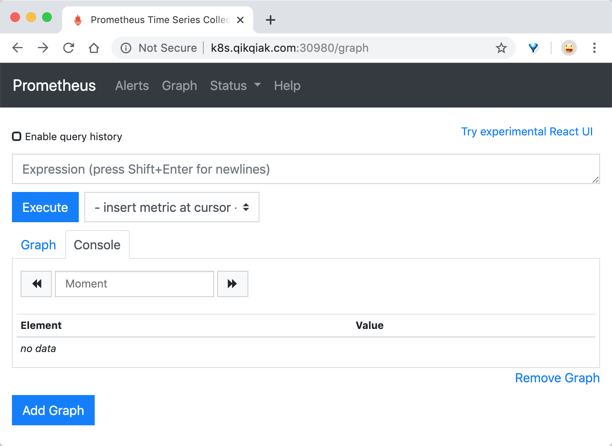
现在我们可以查看当前监控系统中的一些监控目标（Status -> Targets）：
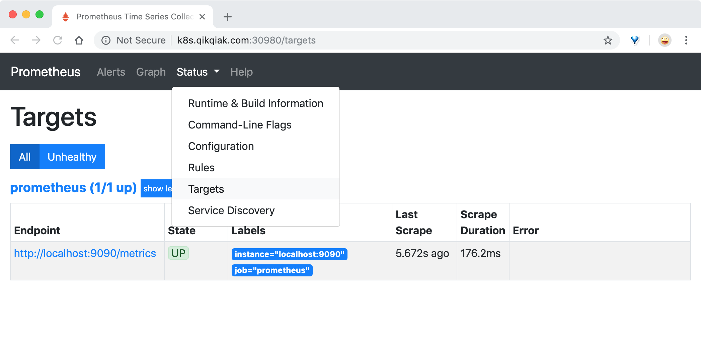
由于我们现在还没有配置任何的报警信息，所以 Alerts 菜单下面现在没有任何数据，隔一会儿，我们可以去 Graph 菜单下面查看我们抓取的 prometheus 本身的一些监控数据了，其中- insert metrics at cursor -下面就有我们搜集到的一些监控指标数据：
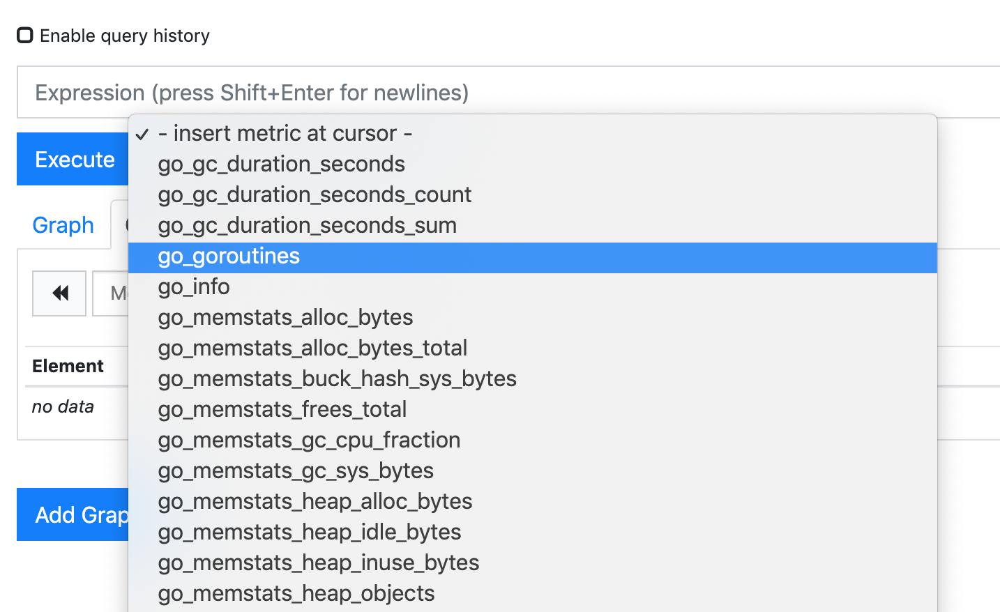
比如我们这里就选择 scrape_duration_seconds 这个指标，然后点击 Execute，就可以看到类似于下面的图表数据了：
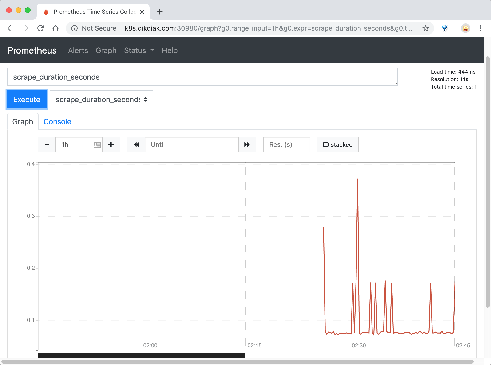
除了简单的直接使用采集到的一些监控指标数据之外，这个时候也可以使用强大的 PromQL 工具，PromQL 其实就是 prometheus 便于数据聚合展示开发的一套 ad hoc 查询语言的，你想要查什么找对应函数取你的数据好了。
应用监控¶
前面我们和大家介绍了 Prometheus 的数据指标是通过一个公开的 HTTP(S) 数据接口获取到的，我们不需要单独安装监控的 agent，只需要暴露一个 metrics 接口，Prometheus 就会定期去拉取数据；对于一些普通的 HTTP 服务，我们完全可以直接重用这个服务，添加一个 /metrics 接口暴露给 Prometheus；而且获取到的指标数据格式是非常易懂的，不需要太高的学习成本。
现在很多服务从一开始就内置了一个 /metrics 接口，比如 Kubernetes 的各个组件、istio 服务网格都直接提供了数据指标接口。有一些服务即使没有原生集成该接口，也完全可以使用一些 exporter 来获取到指标数据，比如 mysqld_exporter、node_exporter，这些 exporter 就有点类似于传统监控服务中的 agent，作为服务一直存在，用来收集目标服务的指标数据然后直接暴露给 Prometheus。
普通应用¶
对于普通应用只需要能够提供一个满足 prometheus 格式要求的 /metrics 接口就可以让 Prometheus 来接管监控，比如 Kubernetes 集群中非常重要的 CoreDNS 插件，一般默认情况下就开启了 /metrics 接口：
$ kubectl get cm coredns -n kube-system -o yaml
apiVersion: v1
data:
Corefile: |
.:53 {
errors
health
ready
kubernetes cluster.local in-addr.arpa ip6.arpa {
pods insecure
fallthrough in-addr.arpa ip6.arpa
ttl 30
}
prometheus :9153
forward . /etc/resolv.conf
cache 30
loop
reload
loadbalance
}
kind: ConfigMap
metadata:
creationTimestamp: "2019-11-08T11:59:49Z"
name: coredns
namespace: kube-system
resourceVersion: "188"
selfLink: /api/v1/namespaces/kube-system/configmaps/coredns
uid: 21966186-c2d9-467a-b87f-d061c5c9e4d7上面 ConfigMap 中 prometheus :9153 就是开启 prometheus 的插件：
$ kubectl get pods -n kube-system -l k8s-app=kube-dns -o wide
NAME READY STATUS RESTARTS AGE IP NODE NOMINATED NODE READINESS GATES
coredns-667f964f9b-sthqq 1/1 Running 0 4d20h 10.244.1.15 ydzs-node1 <none> <none>
coredns-667f964f9b-zj4r4 1/1 Running 0 4d20h 10.244.2.127 ydzs-node3 <none> <none>我们可以先尝试手动访问下 /metrics 接口，如果能够手动访问到那证明接口是没有任何问题的：
$ curl http://10.244.1.15:9153/metrics
# HELP coredns_build_info A metric with a constant '1' value labeled by version, revision, and goversion from which CoreDNS was built.
# TYPE coredns_build_info gauge
coredns_build_info{goversion="go1.12.8",revision="795a3eb",version="1.6.2"} 1
# HELP coredns_cache_hits_total The count of cache hits.
# TYPE coredns_cache_hits_total counter
coredns_cache_hits_total{server="dns://:53",type="success"} 4
# HELP coredns_cache_misses_total The count of cache misses.
# TYPE coredns_cache_misses_total counter
coredns_cache_misses_total{server="dns://:53"} 15
# HELP coredns_cache_size The number of elements in the cache.
# TYPE coredns_cache_size gauge
coredns_cache_size{server="dns://:53",type="denial"} 5
coredns_cache_size{server="dns://:53",type="success"} 4
......我们可以看到可以正常访问到，从这里可以看到 CoreDNS 的监控数据接口是正常的了，然后我们就可以将这个 /metrics 接口配置到 prometheus.yml 中去了，直接加到默认的 prometheus 这个 job 下面：(prome-cm.yaml)
apiVersion: v1
kind: ConfigMap
metadata:
name: prometheus-config
namespace: kube-mon
data:
prometheus.yml: |
global:
scrape_interval: 15s
scrape_timeout: 15s
scrape_configs:
- job_name: 'prometheus'
static_configs:
- targets: ['localhost:9090']
- job_name: 'coredns'
static_configs:
- targets: ['10.244.1.15:9153', '10.244.2.127:9153']当然，我们这里只是一个很简单的配置，scrape_configs 下面可以支持很多参数，例如：
basic_auth和bearer_token：比如我们提供的/metrics接口需要 basic 认证的时候，通过传统的用户名/密码或者在请求的 header 中添加对应的 token 都可以支持kubernetes_sd_configs或consul_sd_configs：可以用来自动发现一些应用的监控数据
现在我们重新更新这个 ConfigMap 资源对象：
$ kubectl apply -f prometheus-cm.yaml
configmap/prometheus-config configured现在 Prometheus 的配置文件内容已经更改了，隔一会儿被挂载到 Pod 中的 prometheus.yml 文件也会更新，由于我们之前的 Prometheus 启动参数中添加了 --web.enable-lifecycle 参数，所以现在我们只需要执行一个 reload 命令即可让配置生效：
$ kubectl get pods -n kube-mon -o wide
NAME READY STATUS RESTARTS AGE IP NODE NOMINATED NODE READINESS GATES
prometheus-79b8774f68-7m8zr 1/1 Running 0 28m 10.244.3.174 ydzs-node3 <none> <none>
$ curl -X POST "http://10.244.3.174:9090/-/reload"热更新
由于 ConfigMap 通过 Volume 的形式挂载到 Pod 中去的热更新需要一定的间隔时间才会生效，所以需要稍微等一小会儿。
这个时候我们再去看 Prometheus 的 Dashboard 中查看采集的目标数据：
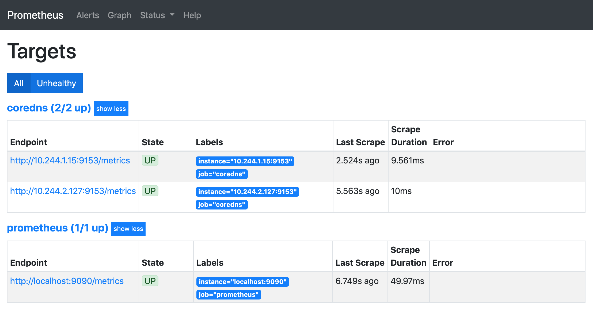
可以看到我们刚刚添加的 coredns 这个任务已经出现了，然后同样的我们可以切换到 Graph 下面去，我们可以找到一些 CoreDNS 的指标数据，至于这些指标数据代表什么意义，一般情况下，我们可以去查看对应的 /metrics 接口，里面一般情况下都会有对应的注释。
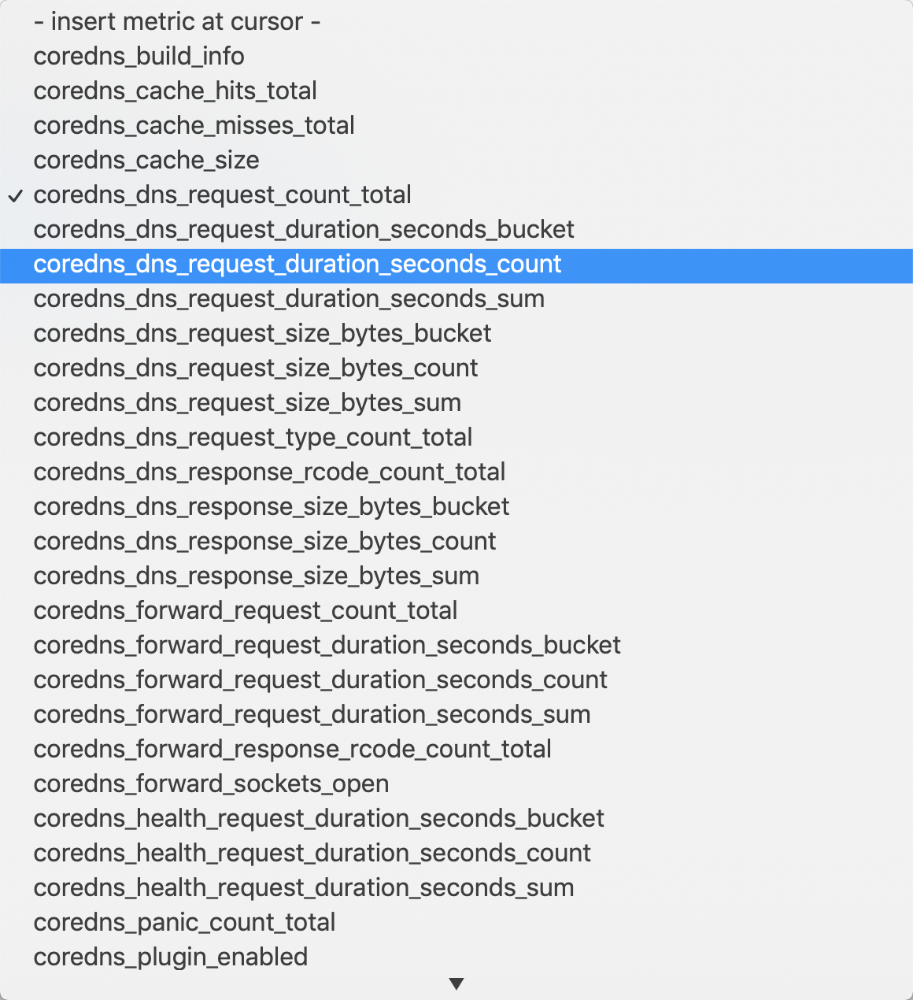
到这里我们就在 Prometheus 上配置了第一个 Kubernetes 应用。
使用 exporter 监控¶
上面我们也说过有一些应用可能没有自带 /metrics 接口供 Prometheus 使用，在这种情况下，我们就需要利用 exporter 服务来为 Prometheus 提供指标数据了。Prometheus 官方为许多应用就提供了对应的 exporter 应用，也有许多第三方的实现，我们可以前往官方网站进行查看：exporters，当然如果你的应用本身也没有 exporter 实现，那么就要我们自己想办法去实现一个 /metrics 接口了，只要你能提供一个合法的 /metrics 接口，Prometheus 就可以监控你的应用。
比如我们这里通过一个 redis-exporter 的服务来监控 redis 服务，对于这类应用，我们一般会以 sidecar 的形式和主应用部署在同一个 Pod 中，比如我们这里来部署一个 redis 应用，并用 redis-exporter 的方式来采集监控数据供 Prometheus 使用，如下资源清单文件：（prome-redis.yaml）
apiVersion: apps/v1
kind: Deployment
metadata:
name: redis
namespace: kube-mon
spec:
selector:
matchLabels:
app: redis
template:
metadata:
annotations:
prometheus.io/scrape: "true"
prometheus.io/port: "9121"
labels:
app: redis
spec:
containers:
- name: redis
image: redis:4
resources:
requests:
cpu: 100m
memory: 100Mi
ports:
- containerPort: 6379
- name: redis-exporter
image: oliver006/redis_exporter:latest
resources:
requests:
cpu: 100m
memory: 100Mi
ports:
- containerPort: 9121
---
kind: Service
apiVersion: v1
metadata:
name: redis
namespace: kube-mon
spec:
selector:
app: redis
ports:
- name: redis
port: 6379
targetPort: 6379
- name: prom
port: 9121
targetPort: 9121可以看到上面我们在 redis 这个 Pod 中包含了两个容器，一个就是 redis 本身的主应用，另外一个容器就是 redis_exporter。现在直接创建上面的应用：
$ kubectl apply -f prome-redis.yaml
deployment.apps/redis created
service/redis created创建完成后，我们可以看到 redis 的 Pod 里面包含有两个容器：
$ kubectl get pods -n kube-mon
NAME READY STATUS RESTARTS AGE
prometheus-79b8774f68-7m8zr 1/1 Running 0 54m
redis-7c8bdd45cc-ssjbz 2/2 Running 0 2m1s
$ kubectl get svc -n kube-mon
NAME TYPE CLUSTER-IP EXTERNAL-IP PORT(S) AGE
prometheus NodePort 10.96.194.29 <none> 9090:30980/TCP 15h
redis ClusterIP 10.110.14.69 <none> 6379/TCP,9121/TCP 2m14s我们可以通过 9121 端口来校验是否能够采集到数据：
$ curl 10.110.14.69:9121/metrics
# HELP go_gc_duration_seconds A summary of the GC invocation durations.
# TYPE go_gc_duration_seconds summary
go_gc_duration_seconds{quantile="0"} 0
go_gc_duration_seconds{quantile="0.25"} 0
go_gc_duration_seconds{quantile="0.5"} 0
go_gc_duration_seconds{quantile="0.75"} 0
go_gc_duration_seconds{quantile="1"} 0
go_gc_duration_seconds_sum 0
go_gc_duration_seconds_count 0
......
# HELP redis_up Information about the Redis instance
# TYPE redis_up gauge
redis_up 1
# HELP redis_uptime_in_seconds uptime_in_seconds metric
# TYPE redis_uptime_in_seconds gauge
redis_uptime_in_seconds 100同样的，现在我们只需要更新 Prometheus 的配置文件：
- job_name: 'redis'
static_configs:
- targets: ['redis:9121']由于我们这里是通过 Service 去配置的 redis 服务，当然直接配置 Pod IP 也是可以的，因为和 Prometheus 处于同一个 namespace，所以我们直接使用 servicename 即可。配置文件更新后，重新加载：
$ kubectl apply -f prometheus-cm.yaml
configmap/prometheus-config configured
# 隔一会儿执行reload操作
$ curl -X POST "http://10.244.3.174:9090/-/reload"这个时候我们再去看 Prometheus 的 Dashboard 中查看采集的目标数据：
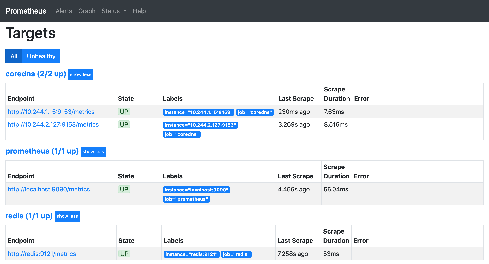
可以看到配置的 redis 这个 job 已经生效了。切换到 Graph 下面可以看到很多关于 redis 的指标数据，我们选择任意一个指标，比如 redis_exporter_scrapes_total，然后点击执行就可以看到对应的数据图表了：
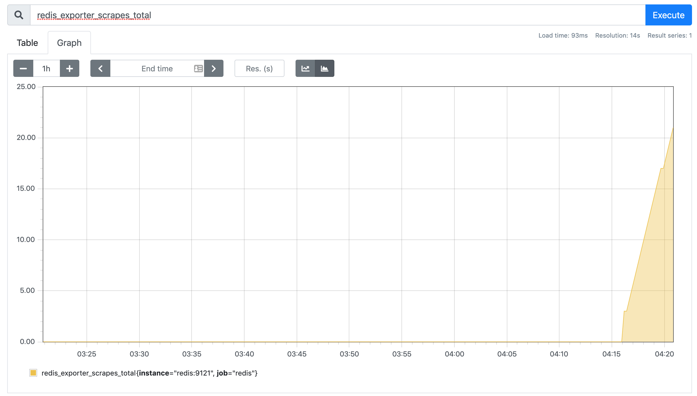
集群节点¶
前面我们和大家学习了怎样用 Promethues 来监控 Kubernetes 集群中的应用，但是对于 Kubernetes 集群本身的监控也是非常重要的，我们需要时时刻刻了解集群的运行状态。
对于集群的监控一般我们需要考虑以下几个方面：
- Kubernetes 节点的监控：比如节点的 cpu、load、disk、memory 等指标
- 内部系统组件的状态：比如 kube-scheduler、kube-controller-manager、kubedns/coredns 等组件的详细运行状态
- 编排级的 metrics：比如 Deployment 的状态、资源请求、调度和 API 延迟等数据指标
Kubernetes 集群的监控方案目前主要有以下几种方案：
- Heapster：Heapster 是一个集群范围的监控和数据聚合工具，以 Pod 的形式运行在集群中。 heapster 除了 Kubelet/cAdvisor 之外，我们还可以向 Heapster 添加其他指标源数据，比如 kube-state-metrics，需要注意的是 Heapster 已经被废弃了，后续版本中会使用 metrics-server 代替。
- cAdvisor：cAdvisor 是 Google 开源的容器资源监控和性能分析工具，它是专门为容器而生，本身也支持 Docker 容器。
- kube-state-metrics：kube-state-metrics 通过监听 API Server 生成有关资源对象的状态指标，比如 Deployment、Node、Pod，需要注意的是 kube-state-metrics 只是简单提供一个 metrics 数据，并不会存储这些指标数据，所以我们可以使用 Prometheus 来抓取这些数据然后存储。
- metrics-server：metrics-server 也是一个集群范围内的资源数据聚合工具，是 Heapster 的替代品，同样的，metrics-server 也只是显示数据，并不提供数据存储服务。
不过 kube-state-metrics 和 metrics-server 之间还是有很大不同的，二者的主要区别如下：
- kube-state-metrics 主要关注的是业务相关的一些元数据，比如 Deployment、Pod、副本状态等
- metrics-server 主要关注的是资源度量 API 的实现，比如 CPU、文件描述符、内存、请求延时等指标。
监控集群节点¶
要监控节点其实我们已经有很多非常成熟的方案了，比如 Nagios、zabbix，甚至我们自己来收集数据也可以，我们这里通过 Prometheus 来采集节点的监控指标数据，可以通过 node_exporter 来获取，顾名思义，node_exporter 就是抓取用于采集服务器节点的各种运行指标，目前 node_exporter 支持几乎所有常见的监控点，比如 conntrack，cpu，diskstats，filesystem，loadavg，meminfo，netstat 等，详细的监控点列表可以参考其 Github 仓库。
我们可以通过 DaemonSet 控制器来部署该服务，这样每一个节点都会自动运行一个这样的 Pod，如果我们从集群中删除或者添加节点后，也会进行自动扩展。
在部署 node-exporter 的时候有一些细节需要注意，如下资源清单文件：(prome-node-exporter.yaml)
apiVersion: apps/v1
kind: DaemonSet
metadata:
name: node-exporter
namespace: kube-mon
labels:
app: node-exporter
spec:
selector:
matchLabels:
app: node-exporter
template:
metadata:
labels:
app: node-exporter
spec:
hostPID: true
hostIPC: true
hostNetwork: true
nodeSelector:
kubernetes.io/os: linux
containers:
- name: node-exporter
image: prom/node-exporter:v0.18.1
args:
- --web.listen-address=$(HOSTIP):9100
- --path.procfs=/host/proc
- --path.sysfs=/host/sys
- --path.rootfs=/host/root
- --collector.filesystem.ignored-mount-points=^/(dev|proc|sys|var/lib/docker/.+)($|/)
- --collector.filesystem.ignored-fs-types=^(autofs|binfmt_misc|cgroup|configfs|debugfs|devpts|devtmpfs|fusectl|hugetlbfs|mqueue|overlay|proc|procfs|pstore|rpc_pipefs|securityfs|sysfs|tracefs)$
ports:
- containerPort: 9100
env:
- name: HOSTIP
valueFrom:
fieldRef:
fieldPath: status.hostIP
resources:
requests:
cpu: 150m
memory: 180Mi
limits:
cpu: 150m
memory: 180Mi
securityContext:
runAsNonRoot: true
runAsUser: 65534
volumeMounts:
- name: proc
mountPath: /host/proc
- name: sys
mountPath: /host/sys
- name: root
mountPath: /host/root
mountPropagation: HostToContainer
readOnly: true
tolerations:
- operator: "Exists"
volumes:
- name: proc
hostPath:
path: /proc
- name: dev
hostPath:
path: /dev
- name: sys
hostPath:
path: /sys
- name: root
hostPath:
path: /由于我们要获取到的数据是主机的监控指标数据，而我们的 node-exporter 是运行在容器中的，所以我们在 Pod 中需要配置一些 Pod 的安全策略，这里我们就添加了 hostPID: true、hostIPC: true、hostNetwork: true 3个策略，用来使用主机的 PID namespace、IPC namespace 以及主机网络，这些 namespace 就是用于容器隔离的关键技术，要注意这里的 namespace 和集群中的 namespace 是两个完全不相同的概念。
另外我们还将主机的 /dev、/proc、/sys这些目录挂载到容器中，这些因为我们采集的很多节点数据都是通过这些文件夹下面的文件来获取到的，比如我们在使用 top 命令可以查看当前 cpu 使用情况，数据就来源于文件 /proc/stat，使用 free 命令可以查看当前内存使用情况，其数据来源是来自 /proc/meminfo 文件。
另外由于我们集群使用的是 kubeadm 搭建的，所以如果希望 master 节点也一起被监控，则需要添加相应的容忍，然后直接创建上面的资源对象：
$ kubectl apply -f prome-node-exporter.yaml
daemonset.apps/node-exporter created
$ kubectl get pods -n kube-mon -l app=node-exporter -o wide
NAME READY STATUS RESTARTS AGE IP NODE NOMINATED NODE READINESS GATES
node-exporter-cd2cq 1/1 Running 0 107s 10.151.30.57 ydzs-node3 <none> <none>
node-exporter-l6jv6 1/1 Running 0 107s 10.151.30.23 ydzs-node2 <none> <none>
node-exporter-qv4x5 1/1 Running 0 107s 10.151.30.59 ydzs-node4 <none> <none>
node-exporter-vbbhc 1/1 Running 0 107s 10.151.30.11 ydzs-master <none> <none>
node-exporter-wlgnz 1/1 Running 0 107s 10.151.30.22 ydzs-node1 <none> <none>部署完成后，我们可以看到在5个节点上都运行了一个 Pod，由于我们指定了 hostNetwork=true，所以在每个节点上就会绑定一个端口 9100，我们可以通过这个端口去获取到监控指标数据：
$ curl 10.151.30.11:9100/metrics
...
node_filesystem_device_error{device="shm",fstype="tmpfs",mountpoint="/rootfs/var/lib/docker/containers/aefe8b1b63c3aa5f27766053ec817415faf8f6f417bb210d266fef0c2da64674/shm"} 1
node_filesystem_device_error{device="shm",fstype="tmpfs",mountpoint="/rootfs/var/lib/docker/containers/c8652ca72230496038a07e4fe4ee47046abb5f88d9d2440f0c8a923d5f3e133c/shm"} 1
node_filesystem_device_error{device="tmpfs",fstype="tmpfs",mountpoint="/dev"} 0
node_filesystem_device_error{device="tmpfs",fstype="tmpfs",mountpoint="/dev/shm"} 0
...当然如果你觉得上面的手动安装方式比较麻烦，我们也可以使用 Helm 的方式来安装：
$ helm upgrade --install node-exporter --namespace kube-mon stable/prometheus-node-exporter服务发现¶
由于我们这里每个节点上面都运行了 node-exporter 程序，如果我们通过一个 Service 来将数据收集到一起用静态配置的方式配置到 Prometheus 去中，就只会显示一条数据，我们得自己在指标数据中去过滤每个节点的数据，当然我们也可以手动的把所有节点用静态的方式配置到 Prometheus 中去，但是以后要新增或者去掉节点的时候就还得手动去配置，那么有没有一种方式可以让 Prometheus 去自动发现我们节点的 node-exporter 程序，并且按节点进行分组呢？这就是 Prometheus 里面非常重要的服务发现功能了。
在 Kubernetes 下，Promethues 通过与 Kubernetes API 集成，主要支持5中服务发现模式，分别是：Node、Service、Pod、Endpoints、Ingress。
我们通过 kubectl 命令可以很方便的获取到当前集群中的所有节点信息：
$ kubectl get nodes
NAME STATUS ROLES AGE VERSION
ydzs-master Ready master 33d v1.16.2
ydzs-node1 Ready <none> 33d v1.16.2
ydzs-node2 Ready <none> 33d v1.16.2
ydzs-node3 Ready <none> 31d v1.16.2
ydzs-node4 Ready <none> 31d v1.16.2但是要让 Prometheus 也能够获取到当前集群中的所有节点信息的话，我们就需要利用 Node 的服务发现模式，同样的，在 prometheus.yml 文件中配置如下的 job 任务即可：
- job_name: 'kubernetes-nodes'
kubernetes_sd_configs:
- role: node通过指定 kubernetes_sd_configs 的模式为node，Prometheus 就会自动从 Kubernetes 中发现所有的 node 节点并作为当前 job 监控的目标实例，发现的节点 /metrics 接口是默认的 kubelet 的 HTTP 接口。
prometheus 的 ConfigMap 更新完成后，同样的我们执行 reload 操作，让配置生效：
$ kubectl apply -f prometheus-cm.yaml
configmap/prometheus-config configured
# 隔一会儿执行reload操作
$ curl -X POST "http://10.244.3.174:9090/-/reload"配置生效后，我们再去 prometheus 的 dashboard 中查看 Targets 是否能够正常抓取数据，访问http://任意节点IP:30980：
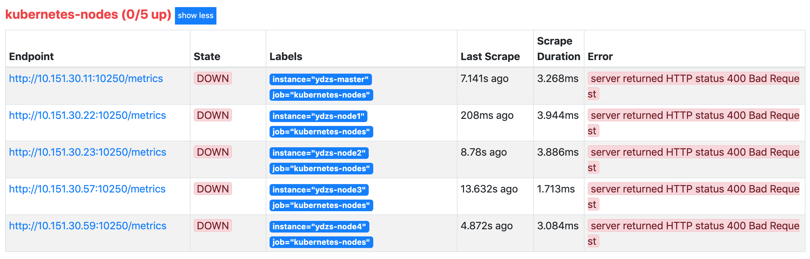
我们可以看到上面的 kubernetes-nodes 这个 job 任务已经自动发现了我们5个 node 节点，但是在获取数据的时候失败了，出现了类似于下面的错误信息：
server returned HTTP status 400 Bad Request这个是因为 prometheus 去发现 Node 模式的服务的时候，访问的端口默认是10250，而默认是需要认证的 https 协议才有权访问的，但实际上我们并不是希望让去访问10250端口的 /metrics 接口，而是 node-exporter 绑定到节点的 9100 端口，所以我们应该将这里的 10250 替换成 9100，但是应该怎样替换呢？
这里我们就需要使用到 Prometheus 提供的 relabel_configs 中的 replace 能力了，relabel 可以在 Prometheus 采集数据之前，通过 Target 实例的 Metadata 信息，动态重新写入 Label 的值。除此之外，我们还能根据 Target 实例的 Metadata 信息选择是否采集或者忽略该 Target 实例。比如我们这里就可以去匹配 __address__ 这个 Label 标签，然后替换掉其中的端口，如果你不知道有哪些 Label 标签可以操作的话，可以将鼠标🎒移动到 Targets 的标签区域，其中显示的 Before relabeling 区域都是我们可以操作的标签：
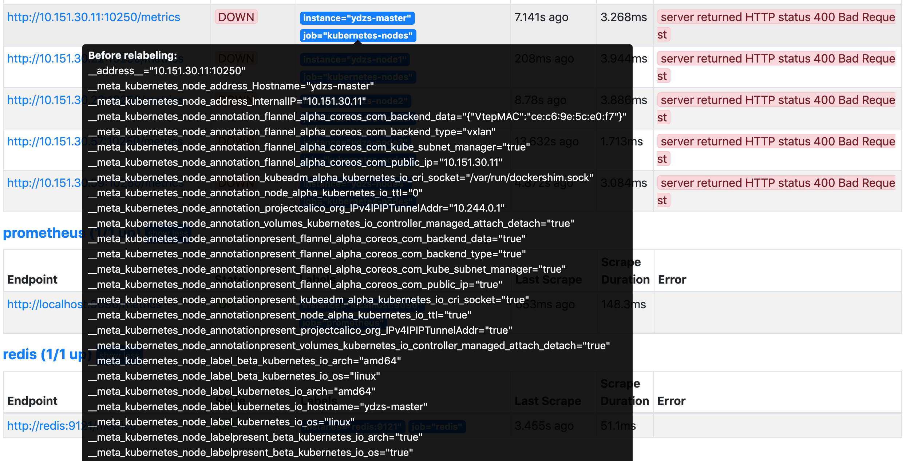
现在我们来替换掉端口，修改 ConfigMap：
- job_name: 'kubernetes-nodes'
kubernetes_sd_configs:
- role: node
relabel_configs:
- source_labels: [__address__]
regex: '(.*):10250'
replacement: '${1}:9100'
target_label: __address__
action: replace这里就是一个正则表达式，去匹配 __address__ 这个标签，然后将 host 部分保留下来，port 替换成了 9100，现在我们重新更新配置文件，执行 reload 操作，然后再去看 Prometheus 的 Dashboard 的 Targets 路径下面 kubernetes-nodes 这个 job 任务是否正常了：
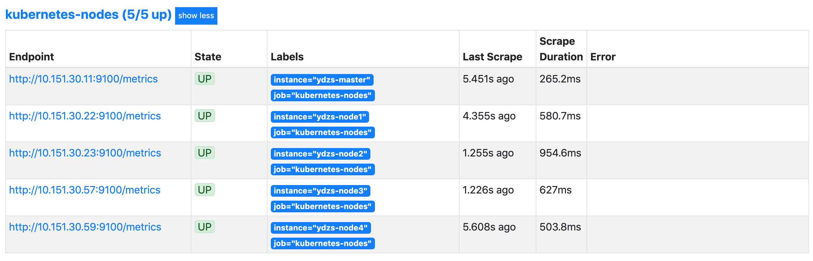
我们可以看到现在已经正常了，但是还有一个问题就是我们采集的指标数据 Label 标签就只有一个节点的 hostname，这对于我们在进行监控分组分类查询的时候带来了很多不方便的地方，要是我们能够将集群中 Node 节点的 Label 标签也能获取到就很好了。这里我们可以通过 labelmap 这个属性来将 Kubernetes 的 Label 标签添加为 Prometheus 的指标数据的标签：
- job_name: 'kubernetes-nodes'
kubernetes_sd_configs:
- role: node
relabel_configs:
- source_labels: [__address__]
regex: '(.*):10250'
replacement: '${1}:9100'
target_label: __address__
action: replace
- action: labelmap
regex: __meta_kubernetes_node_label_(.+)添加了一个 action 为 labelmap，正则表达式是 __meta_kubernetes_node_label_(.+) 的配置，这里的意思就是表达式中匹配都的数据也添加到指标数据的 Label 标签中去。
对于 kubernetes_sd_configs 下面可用的元信息标签如下：
__meta_kubernetes_node_name：节点对象的名称_meta_kubernetes_node_label：节点对象中的每个标签_meta_kubernetes_node_annotation：来自节点对象的每个注释_meta_kubernetes_node_address：每个节点地址类型的第一个地址（如果存在）
关于 kubernets_sd_configs 更多信息可以查看官方文档：kubernetes_sd_config
另外由于 kubelet 也自带了一些监控指标数据，就上面我们提到的 10250 端口，所以我们这里也把 kubelet 的监控任务也一并配置上：
- job_name: 'kubernetes-kubelet'
kubernetes_sd_configs:
- role: node
scheme: https
tls_config:
ca_file: /var/run/secrets/kubernetes.io/serviceaccount/ca.crt
insecure_skip_verify: true
bearer_token_file: /var/run/secrets/kubernetes.io/serviceaccount/token
relabel_configs:
- action: labelmap
regex: __meta_kubernetes_node_label_(.+)但是这里需要特别注意的是这里必须使用 https 协议访问，这样就必然需要提供证书，我们这里是通过配置 insecure_skip_verify: true 来跳过了证书校验，但是除此之外，要访问集群的资源，还必须要有对应的权限才可以，也就是对应的 ServiceAccount 棒的 权限允许才可以，我们这里部署的 prometheus 关联的 ServiceAccount 对象前面我们已经提到过了，这里我们只需要将 Pod 中自动注入的 /var/run/secrets/kubernetes.io/serviceaccount/ca.crt 和 /var/run/secrets/kubernetes.io/serviceaccount/token 文件配置上，就可以获取到对应的权限了。
现在我们再去更新下配置文件，执行 reload 操作，让配置生效，然后访问 Prometheus 的 Dashboard 查看 Targets 路径：
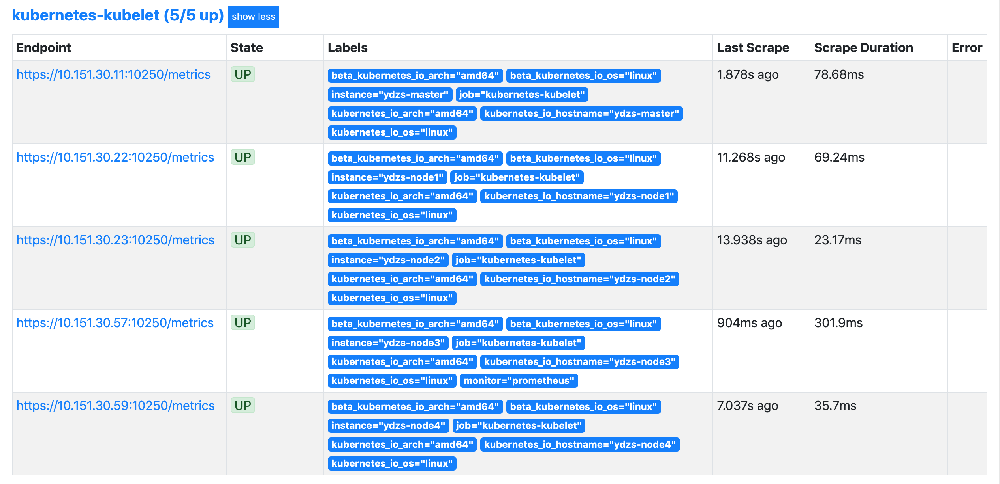
现在可以看到我们上面添加的 kubernetes-kubelet 和 kubernetes-nodes 这两个 job 任务都已经配置成功了，而且二者的 Labels 标签都和集群的 node 节点标签保持一致了。
现在我们就可以切换到 Graph 路径下面查看采集的一些指标数据了，比如查询 node_load1 指标：
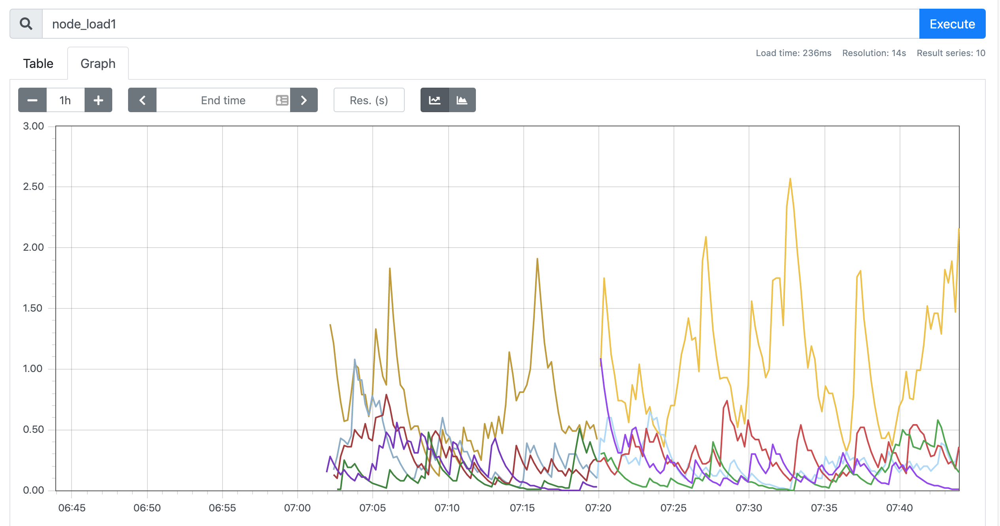
我们可以看到将5个节点对应的 node_load1 指标数据都查询出来了，同样的，我们还可以使用 PromQL 语句来进行更复杂的一些聚合查询操作，还可以根据我们的 Labels 标签对指标数据进行聚合，比如我们这里只查询 ydzs-node3 节点的数据，可以使用表达式 node_load1{instance="ydzs-node3"} 来进行查询：
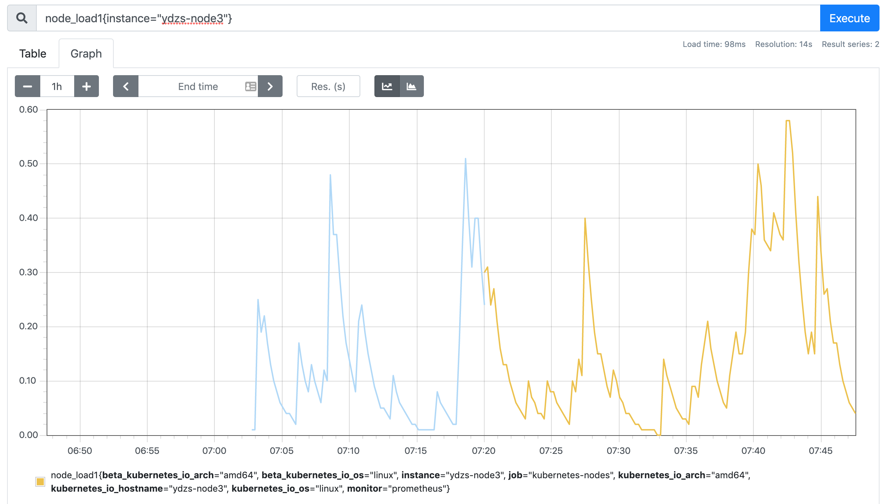
到这里我们就把 Kubernetes 集群节点使用 Prometheus 监控起来了，接下来我们再来和大家学习下怎样监控 Pod 或者 Service 之类的资源对象。
容器监控¶
说到容器监控我们自然会想到 cAdvisor，我们前面也说过cAdvisor已经内置在了 kubelet 组件之中，所以我们不需要单独去安装，cAdvisor 的数据路径为 /api/v1/nodes/<node>/proxy/metrics，同样我们这里使用 node 的服务发现模式，因为每一个节点下面都有 kubelet，自然都有 cAdvisor 采集到的数据指标，配置如下：
- job_name: 'kubernetes-cadvisor'
kubernetes_sd_configs:
- role: node
scheme: https
tls_config:
ca_file: /var/run/secrets/kubernetes.io/serviceaccount/ca.crt
bearer_token_file: /var/run/secrets/kubernetes.io/serviceaccount/token
relabel_configs:
- action: labelmap
regex: __meta_kubernetes_node_label_(.+)
- target_label: __address__
replacement: kubernetes.default.svc:443
- source_labels: [__meta_kubernetes_node_name]
regex: (.+)
target_label: __metrics_path__
replacement: /api/v1/nodes/${1}/proxy/metrics/cadvisor上面的配置和我们之前配置 node-exporter 的时候几乎是一样的，区别是我们这里使用了 https 的协议，另外需要注意的是配置了 ca.cart 和 token 这两个文件，这两个文件是 Pod 启动后自动注入进来的，通过这两个文件我们可以在 Pod 中访问 apiserver，比如我们这里的 __address__ 不再是 nodeip 了，而是 kubernetes 在集群中的服务地址，然后加上__metrics_path__ 的访问路径 /api/v1/nodes/${1}/proxy/metrics/cadvisor，因为我们现在是通过 kubernetes 的 apiserver 地址去进行访问的，现在同样更新下配置，然后查看 Targets 路径：
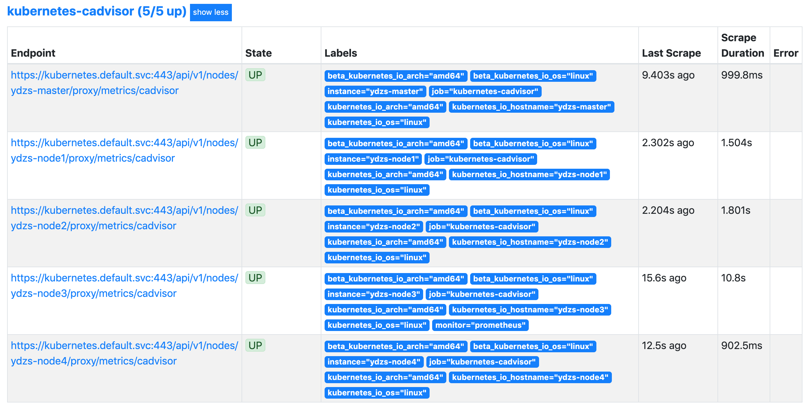
我们可以切换到 Graph 路径下面查询容器相关数据，比如我们这里来查询集群中所有 Pod 的 CPU 使用情况，kubelet 中的 cAdvisor 采集的指标和含义，可以查看 Monitoring cAdvisor with Prometheus 说明，其中有一项：
container_cpu_usage_seconds_total Counter Cumulative cpu time consumed secondscontainer_cpu_usage_seconds_total 是容器累计使用的 CPU 时间，用它除以 CPU 的总时间，就可以得到容器的 CPU 使用率了：
首先计算容器的 CPU 占用时间，由于节点上的 CPU 有多个，所以需要将容器在每个 CPU 上占用的时间累加起来，Pod 在 1m 内累积使用的 CPU 时间为：(根据 pod 和 namespace 进行分组查询)
sum(rate(container_cpu_usage_seconds_total{image!="",pod!=""}[1m])) by (namespace, pod)metrics 变化
在 Kubernetes 1.16 版本中移除了 cadvisor metrics 的 pod_name 和 container_name 这两个标签，改成了 pod 和 container。
“Removed cadvisor metric labels pod_name and container_name to match instrumentation guidelines. Any Prometheus queries that match pod_name and container_name labels (e.g. cadvisor or kubelet probe metrics) must be updated to use pod and container instead. (#80376, @ehashman)”
然后计算 CPU 的总时间，这里的 CPU 数量是容器分配到的 CPU 数量，container_spec_cpu_quota 是容器的 CPU 配额，它的值是容器指定的 CPU 个数 * 100000，所以 Pod 在 1s 内 CPU 的总时间为：Pod 的 CPU 核数 * 1s：
sum(container_spec_cpu_quota{image!="", pod!=""}) by(namespace, pod) / 100000CPU 配额
由于 container_spec_cpu_quota 是容器的 CPU 配额，所以只有配置了 resource-limit CPU 的 Pod 才可以获得该指标数据。
将上面这两个语句的结果相除，就得到了容器的 CPU 使用率：
(sum(rate(container_cpu_usage_seconds_total{image!="",pod!=""}[1m])) by (namespace, pod))
/
(sum(container_spec_cpu_quota{image!="", pod!=""}) by(namespace, pod) / 100000) * 100在 promethues 里面执行上面的 promQL 语句可以得到下面的结果：
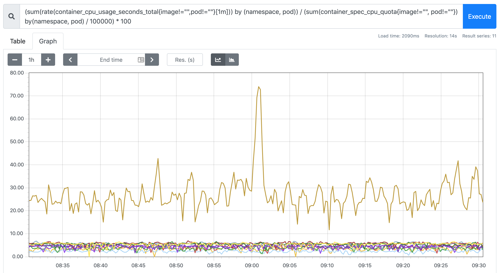
Pod 内存使用率的计算就简单多了，直接用内存实际使用量除以内存限制使用量即可：
sum(container_memory_rss{image!=""}) by(namespace, pod) / sum(container_spec_memory_limit_bytes{image!=""}) by(namespace, pod) * 100 != +inf在 promethues 里面执行上面的 promQL 语句可以得到下面的结果：
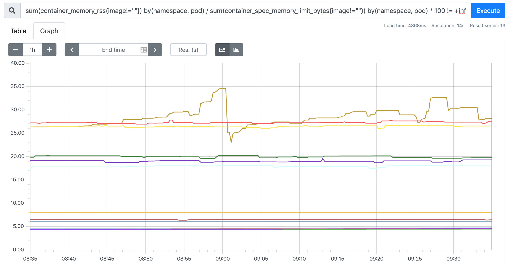
监控 apiserver¶
apiserver 作为 Kubernetes 最核心的组件，当然他的监控也是非常有必要的，对于 apiserver 的监控我们可以直接通过 kubernetes 的 Service 来获取：
$ kubectl get svc
NAME TYPE CLUSTER-IP EXTERNAL-IP PORT(S) AGE
kubernetes ClusterIP 10.96.0.1 <none> 443/TCP 33d上面这个 Service 就是我们集群的 apiserver 在集群内部的 Service 地址，要自动发现 Service 类型的服务，我们就需要用到 role 为 Endpoints 的 kubernetes_sd_configs，我们可以在 ConfigMap 对象中添加上一个 Endpoints 类型的服务的监控任务：
- job_name: 'kubernetes-apiservers'
kubernetes_sd_configs:
- role: endpoints上面这个任务是定义的一个类型为 endpoints 的 kubernetes_sd_configs ，添加到 Prometheus 的 ConfigMap 的配置文件中，然后更新配置：
$ kubectl apply -f prometheus-cm.yaml
configmap/prometheus-config configured
# 隔一会儿执行reload操作
$ curl -X POST "http://10.244.3.174:9090/-/reload"更新完成后，我们再去查看 Prometheus 的 Dashboard 的 target 页面：
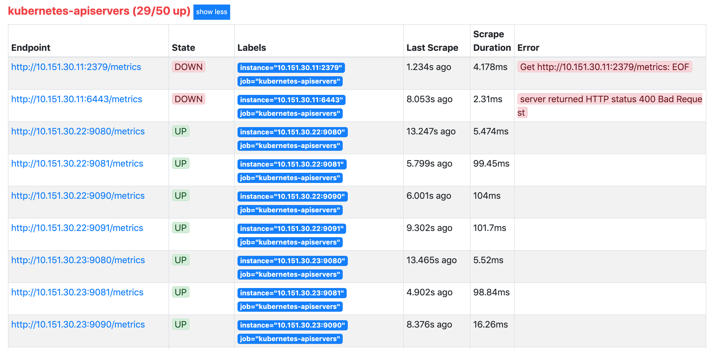
我们可以看到 kubernetes-apiservers 下面出现了很多实例，这是因为这里我们使用的是 Endpoints 类型的服务发现，所以 Prometheus 把所有的 Endpoints 服务都抓取过来了，同样的，上面我们需要的服务名为 kubernetes 这个 apiserver 的服务也在这个列表之中，那么我们应该怎样来过滤出这个服务来呢？还记得前面的 relabel_configs 吗？没错，同样我们需要使用这个配置，只是我们这里不是使用 replace 这个动作了，而是 keep，就是只把符合我们要求的给保留下来，哪些才是符合我们要求的呢？我们可以把鼠标放置在任意一个 target 上，可以查看到Before relabeling里面所有的元数据，比如我们要过滤的服务是 default 这个 namespace 下面，服务名为 kubernetes 的元数据，所以这里我们就可以根据对应的 __meta_kubernetes_namespace 和 __meta_kubernetes_service_name 这两个元数据来 relabel，另外由于 kubernetes 这个服务对应的端口是 443，需要使用 https 协议，所以这里我们需要使用 https 的协议，对应的就需要将 ca 证书配置上，如下所示：
- job_name: 'kubernetes-apiservers'
kubernetes_sd_configs:
- role: endpoints
scheme: https
tls_config:
ca_file: /var/run/secrets/kubernetes.io/serviceaccount/ca.crt
bearer_token_file: /var/run/secrets/kubernetes.io/serviceaccount/token
relabel_configs:
- source_labels: [__meta_kubernetes_namespace, __meta_kubernetes_service_name, __meta_kubernetes_endpoint_port_name]
action: keep
regex: default;kubernetes;https现在重新更新配置文件、重新加载 Prometheus，切换到 Prometheus 的 Targets 路径下查看：
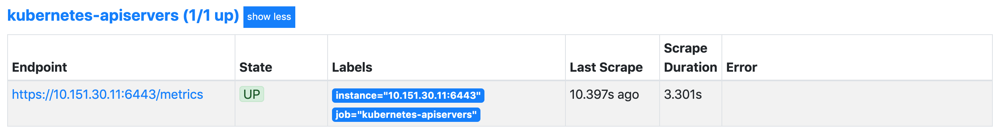
现在可以看到 kubernetes-apiserver 这个任务下面只有 apiserver 这一个实例了，证明我们的 relabel 是成功的，现在我们切换到 Graph 路径下面查看下采集到的数据，比如查询 apiserver 的总的请求数：
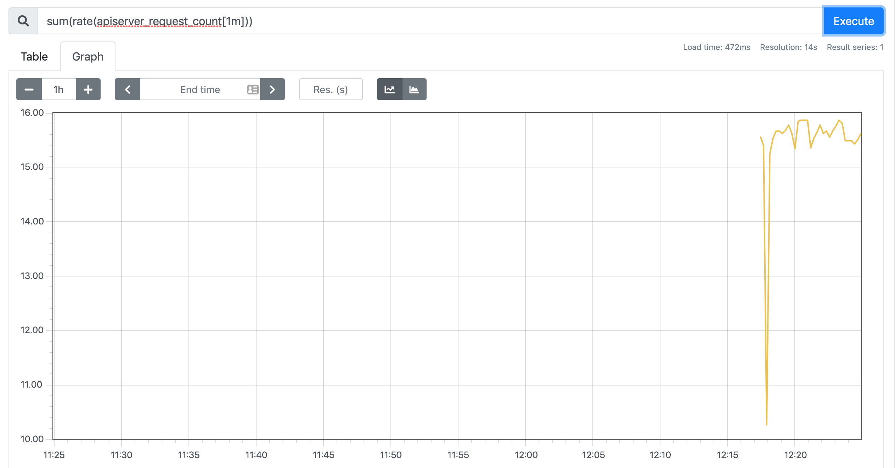
这样我们就完成了对 Kubernetes APIServer 的监控。
另外如果我们要来监控其他系统组件，比如 kube-controller-manager、kube-scheduler 的话应该怎么做呢？由于 apiserver 服务 namespace 在 default 使用默认的 Service kubernetes，而其余组件服务在 kube-system 这个 namespace 下面，如果我们想要来监控这些组件的话，需要手动创建单独的 Service，其中 kube-sheduler 的指标数据端口为 10251，kube-controller-manager 对应的端口为 10252，大家可以尝试下自己来配置下这几个系统组件。
监控 Pod¶
上面的 apiserver 实际上就是一种特殊的 Endpoints，现在我们同样来配置一个任务用来专门发现普通类型的 Endpoint，其实就是 Service 关联的 Pod 列表：
- job_name: 'kubernetes-endpoints'
kubernetes_sd_configs:
- role: endpoints
relabel_configs:
- source_labels: [__meta_kubernetes_service_annotation_prometheus_io_scrape]
action: keep
regex: true
- source_labels: [__meta_kubernetes_service_annotation_prometheus_io_scheme]
action: replace
target_label: __scheme__
regex: (https?)
- source_labels: [__meta_kubernetes_service_annotation_prometheus_io_path]
action: replace
target_label: __metrics_path__
regex: (.+)
- source_labels: [__address__, __meta_kubernetes_service_annotation_prometheus_io_port]
action: replace
target_label: __address__
regex: ([^:]+)(?::\d+)?;(\d+)
replacement: $1:$2
- action: labelmap
regex: __meta_kubernetes_service_label_(.+)
- source_labels: [__meta_kubernetes_namespace]
action: replace
target_label: kubernetes_namespace
- source_labels: [__meta_kubernetes_service_name]
action: replace
target_label: kubernetes_name注意我们这里在 relabel_configs 区域做了大量的配置，特别是第一个保留__meta_kubernetes_service_annotation_prometheus_io_scrape 为 true 的才保留下来，这就是说要想自动发现集群中的 Endpoint，就需要我们在 Service 的 annotation 区域添加 prometheus.io/scrape=true 的声明，现在我们先将上面的配置更新，查看下效果：
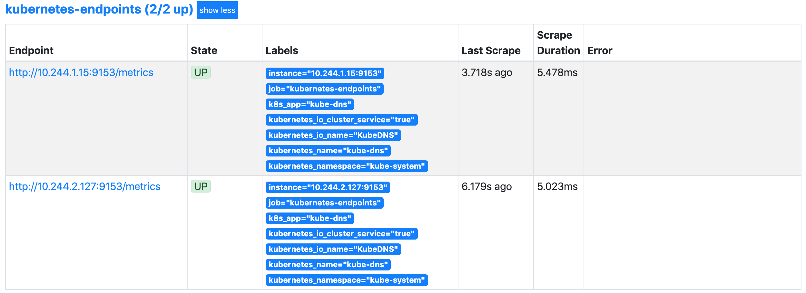
我们可以看到 kubernetes-endpoints 这一个任务下面只发现了两个服务，这是因为我们在 relabel_configs 中过滤了 annotation 有 prometheus.io/scrape=true 的 Service，而现在我们系统中只有这样一个 kube-dns 服务符合要求，该 Service 下面有两个实例，所以出现了两个实例：
$ kubectl get svc kube-dns -n kube-system -o yaml
apiVersion: v1
kind: Service
metadata:
annotations:
prometheus.io/port: "9153" # metrics 接口的端口
prometheus.io/scrape: "true" # 这个注解可以让prometheus自动发现
creationTimestamp: "2019-11-08T11:59:50Z"
labels:
k8s-app: kube-dns
kubernetes.io/cluster-service: "true"
kubernetes.io/name: KubeDNS
name: kube-dns
namespace: kube-system
......现在我们在之前创建的 redis 这个 Service 中添加上 prometheus.io/scrape=true 这个 annotation：(prome-redis.yaml)
kind: Service
apiVersion: v1
metadata:
name: redis
namespace: kube-mon
annotations:
prometheus.io/scrape: "true"
prometheus.io/port: "9121"
spec:
selector:
app: redis
ports:
- name: redis
port: 6379
targetPort: 6379
- name: prom
port: 9121
targetPort: 9121由于 redis 服务的 metrics 接口在 9121 这个 redis-exporter 服务上面，所以我们还需要添加一个 prometheus.io/port=9121 这样的 annotations，然后更新这个 Service：
$ kubectl apply -f prome-redis.yaml
deployment.apps "redis" unchanged
service "redis" changed更新完成后，去 Prometheus 查看 Targets 路径，可以看到 redis 服务自动出现在了 kubernetes-endpoints 这个任务下面：
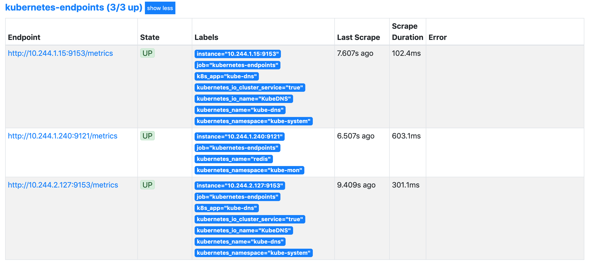
这样以后我们有了新的服务，服务本身提供了 /metrics 接口，我们就完全不需要用静态的方式去配置了，到这里我们就可以将之前配置的 redis 的静态配置去掉了。